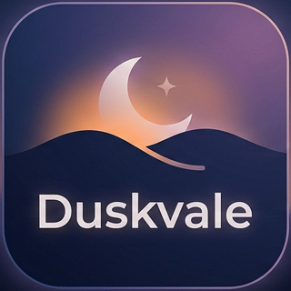

Kendi gecenin sesini kur
Çoğu ortam sesi uygulaması sana bitmiş bir kayıt verir: “Ormanda yağmur”, “Şömine”. Duskvale bunun yerine katmanları eline veriyor. Yağmuru açarsın, altına uzak bir rüzgar katarsın, ateşi kısık tutarsın — ve senin dışında kimsede olmayan bir gece elde edersin.
Altı katman ailesi, toplam 28 kayıt var. Her ailenin kendi ses seviyesi kaydırıcısı var; istediğin kadarını aynı anda çalıştırabilirsin.
Kayıtların tamamı uygulamanın içinde geliyor. Hiçbir şey akıştan çalınmıyor: uçakta, metroda ya da uçak modunda da aynı şekilde çalışır ve mobil verini harcamaz.
Döngü noktaları elle temizlendi — bir kayıt başa sardığında duyacağın bir tık ya da boşluk yok. Ses açılırken 0,7 saniyede yükselir, kapanırken 0,9 saniyede iner.
Ses paneliyle aynı ekranda duran bir renk paneli var. Tekerlekten parmağınla renk seçip listene eklersin; Görselleştir dediğinde bu renkler tam ekranda akışkan bir alana dönüşür. Lekeler yuvarlak durmaz, birbirine karışır ve desen kendini tekrar etmez.
Telefonunda “hareketi azalt” açıksa görselleştirme hareket etmez: tek bir sabit kare çizilir, ekran boş kalmaz.
Duskvale açılır ve çalışır. E-posta istemez, hesap açtırmaz, sunucusuna bir şey göndermez. Uygulamanın telefonunda sakladığı tek şey seçtiğin arayüz dili; renk listen ise yalnızca o oturum boyunca durur.
Uygulamayı silmek, uygulamaya ait her şeyi silmek demektir — geride bir hesap kalmaz.